Lexus Asia Pacific
A conversion-led website redesign, localized across nine markets
I led the end-to-end redesign of Lexus Asia Pacific’s website as the sole UX designer at Convertium, then localized the experience across nine markets.
- Role
- UX strategist and designer
- Project
- 2 years, 2018–2020
- Client relationship
- 7 years, 2017–2024
- Client team
- Lexus Asia Pacific Division: regional team, local market teams, dealerships
- Convertium team
- Project management, data and marketing, UI, development
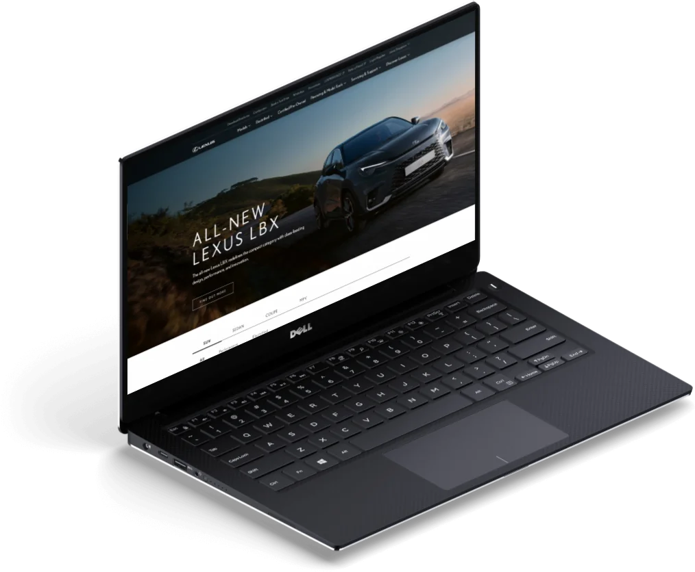
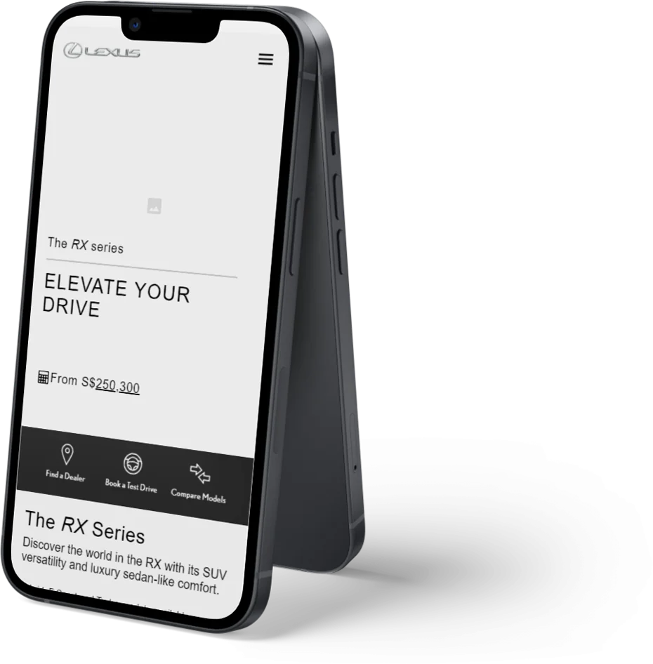
Results
- 31% more test-drive bookings in the first year, and a further 16% the year after.
- Lexus’s Latin America and Caribbean division adopted the designs for its own websites.
- The blueprint was adapted for 17 markets within Toyota Asia Pacific.
- Silver at the 2020 w3 Awards.
The challenge
How might we move from brand education to conversion, shortening the path to a test drive, with a solution that works consistently across culturally and linguistically distinct markets?
Design principles
No dead ends
Every page ends with a contextual next step: a newsletter sign-up, related content or product exploration.
Reduce interaction cost
Key content, such as features, sits in visible tile layouts rather than accordions or lightboxes, so people get a taste of the information without extra clicks.
Always educate
Model names can be confusing, so every mention carries context and pricing. This follows the recognition-over-recall heuristic and answers a key user need.
Modular by design
All layouts support personalization. Any section can move without breaking the page.
Process
Informal card sorting decided the information architecture, from the top-level groups down to the tools that sit under each one.

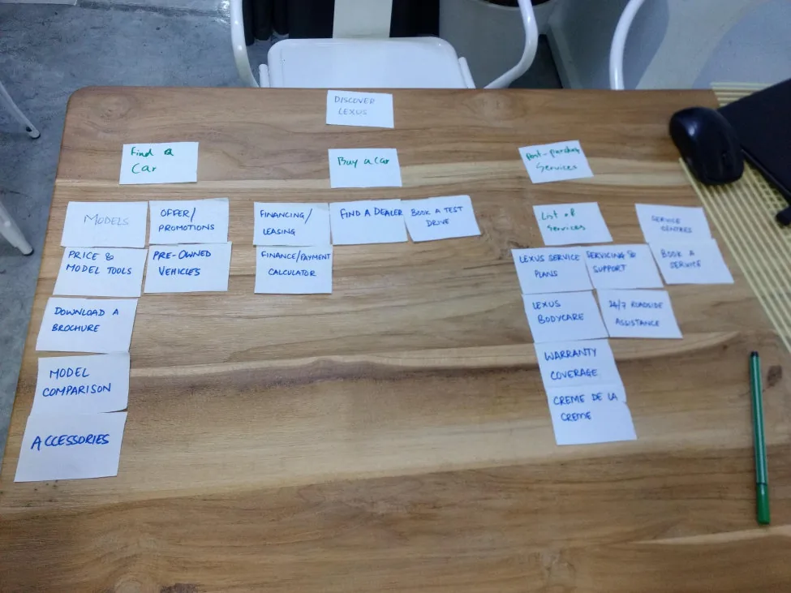

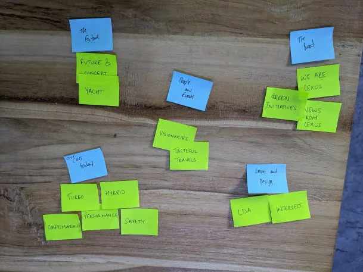
Primary user flows were brainstormed and sketched on whiteboards and paper before anything was drawn on screen.

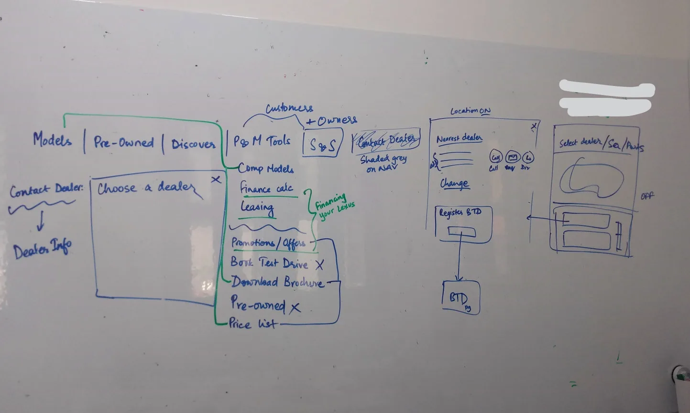

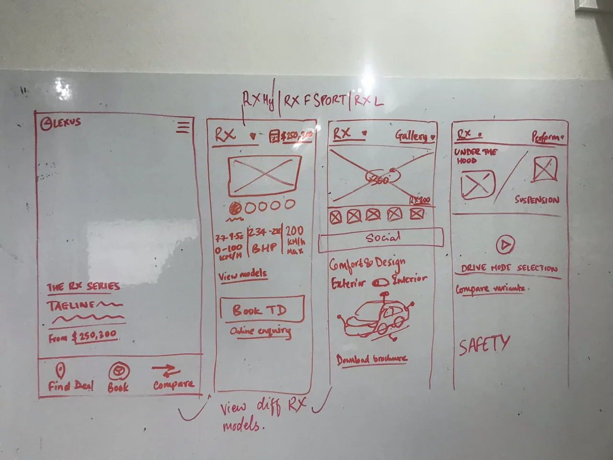
Usability tests with 12 participants, six each in Singapore and India, validated the content prioritization that shortened the path to conversion.

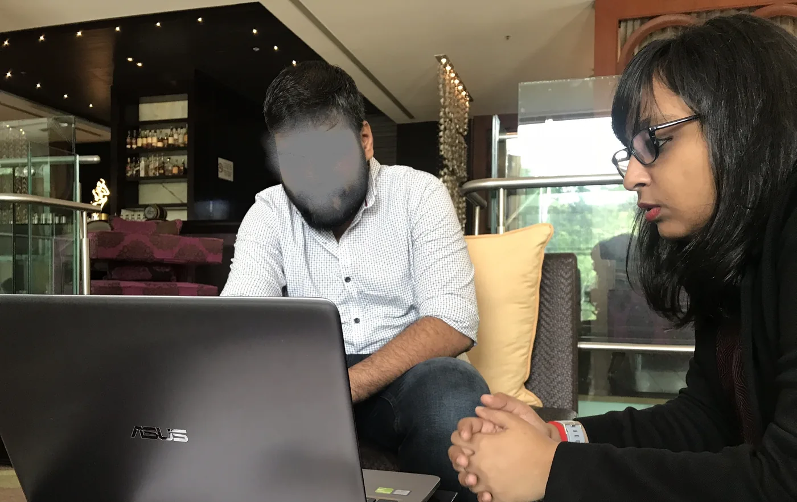

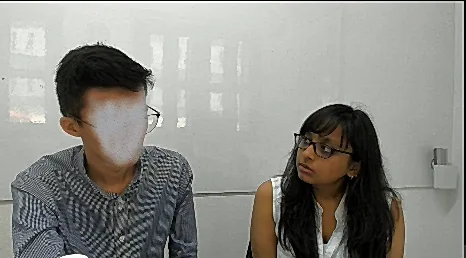
Sketches and mid-fidelity wireframes were the test material. Convertium’s Creative team produced the high-fidelity designs.

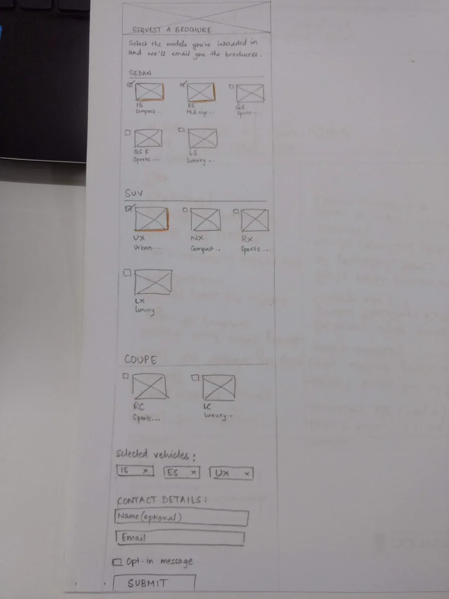

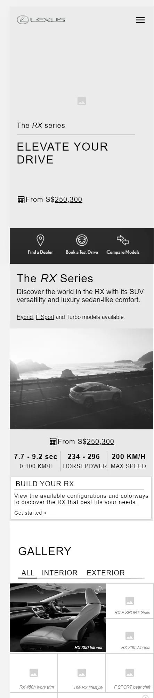

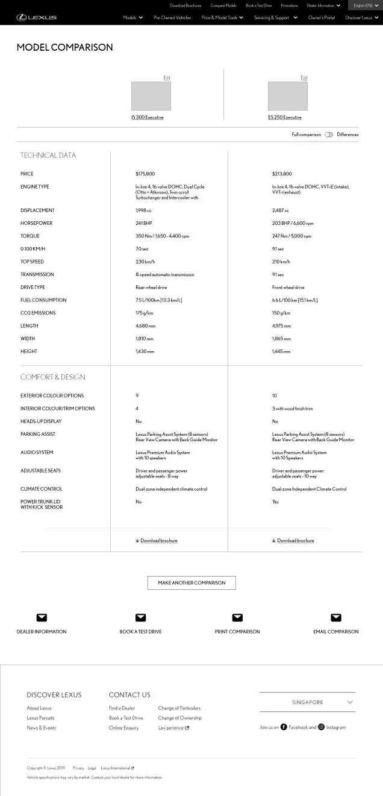

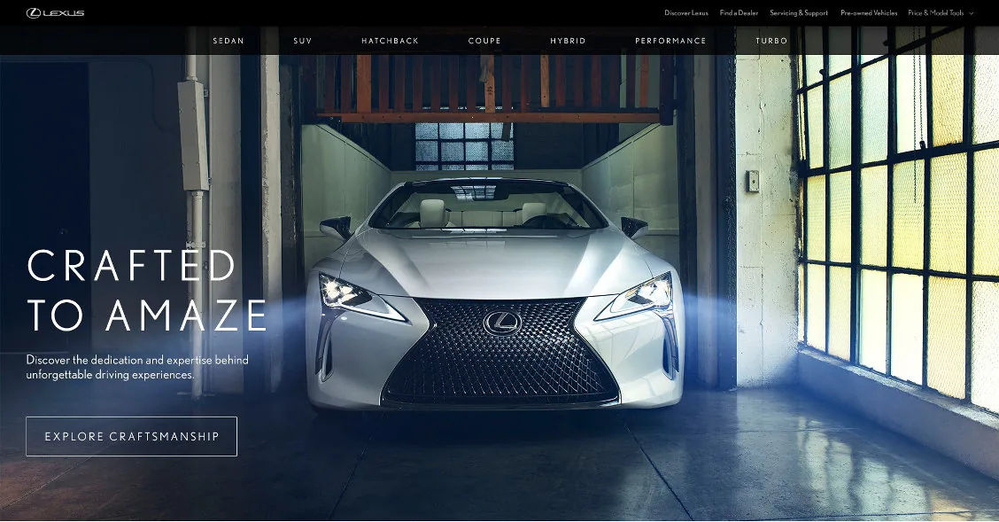